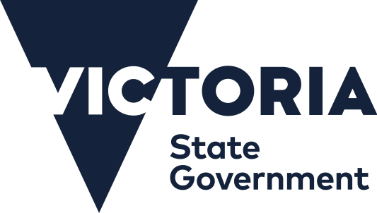
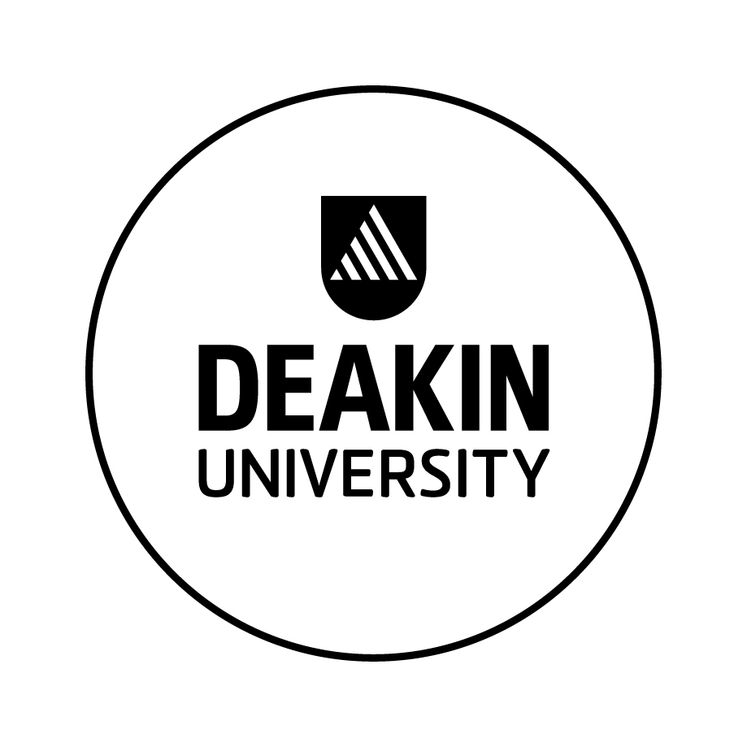

Tailored strategic thinking
Commercial strategy, decarbonisation and investment readiness shaped around the challenge at hand.
Helping organisations navigate complex decisions where policy, investment and industry intersect.
Start a conversationyears across public
and private sectors
We work across innovation, transport, infrastructure and the energy transition, bringing commercial rigour and practical delivery experience to complex work.
Commercial strategy, decarbonisation and investment readiness shaped around the challenge at hand.
Hands-on support across projects, policy development and investor engagement.
Business cases, policy implementation, planning and post-acquisition strategy that move work forward.
Strategic partnerships, grant funding and technology commercialisation from idea through to delivery.
The Advisory Depot is a boutique consulting firm providing strategic and commercial advice across innovation, transport, infrastructure and the energy transition.
With deep expertise at the interface of the public and private sectors, we help organisations move from problem definition through to delivery.
At the interface of government, industry and investment.
Across strategy, transactions, implementation and engagement.
With senior support from problem definition through to delivery.
Built onyears of leadership and management experience

Victorian Department of Transport and Planning

Deakin University
V/Line
Queensland Department of Transport and Main Roads